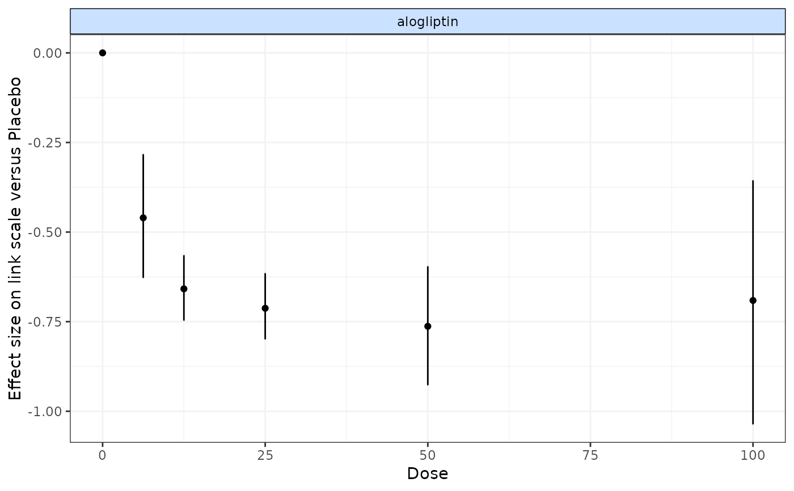

nma.run.RdUsed for calculating treatment-level NMA results, either when comparing MBNMA models to models that
make no assumptions regarding dose-response , or to estimate split results for overlay.split.
Results can also be compared between consistency (UME=FALSE) and inconsistency
(UME=TRUE) models to test the validity of the consistency assumption at the treatment-level.
# S3 method for nma
plot(x, bydose = TRUE, scales = "free_x", ...)
nma.run(
network,
method = "common",
likelihood = NULL,
link = NULL,
priors = NULL,
sdscale = FALSE,
warn.rhat = TRUE,
n.iter = 20000,
drop.discon = TRUE,
UME = FALSE,
pd = "pd.kl",
parameters.to.save = NULL,
...
)An object of class("nma")
A boolean object indicating whether to plot responses with dose
on the x-axis (TRUE) to be able to examine potential dose-response shapes, or
to plot a conventional forest plot with all treatments on the same plot (FALSE)
Should scales be fixed ("fixed", the default),
free ("free"), or free in one dimension ("free_x",
"free_y")?
Arguments to be sent to ggplot2::ggplot()
An object of class mbnma.network.
Indicates the type of split (treatment-level) NMA to perform when overlay.split=TRUE. Can
take either "common" or "random".
A string indicating the likelihood to use in the model. Can take either "binomial",
"normal" or "poisson". If left as NULL the likelihood will be inferred from the data.
A string indicating the link function to use in the model. Can take any link function
defined within JAGS (e.g. "logit", "log", "probit", "cloglog"), be assigned the value "identity" for
an identity link function, or be assigned the value "smd" for modelling Standardised Mean Differences using an
identity link function. If left as NULL the link function will be automatically assigned based
on the likelihood.
A named list of parameter values (without indices) and replacement prior distribution values given as strings using distributions as specified in JAGS syntax (see Plummer (2017) ). Note that normal distributions in JAGS are specified as $$N(\mu, prec)$$, where $$prec = 1 / {\sigma^2}$$.
Logical object to indicate whether to write a model that specifies a reference SD
for standardising when modelling using Standardised Mean Differences. Specifying sdscale=TRUE
will therefore only modify the model if link function is set to SMD (link="smd").
A boolean object to indicate whether to return a warning if Rhat values for any monitored parameter are >1.02 (suggestive of non-convergence).
number of total iterations per chain (including burn in; default: 20000)
A boolean object that indicates whether or not to drop disconnected studies from the network.
A boolean object to indicate whether to fit an Unrelated Mean Effects model that does not assume consistency and so can be used to test if the consistency assumption is valid.
Can take either:
pv only pV will be reported (as automatically outputted by R2jags).
plugin calculates pD by the plug-in
method (Spiegelhalter et al. 2002)
. It is faster, but may output negative
non-sensical values, due to skewed deviances that can arise with non-linear models.
pd.kl calculates pD by the Kullback-Leibler divergence (Plummer 2008)
. This
will require running the model for additional iterations but is a more robust calculation for the effective
number of parameters in non-linear models.
popt calculates pD using an optimism adjustment which allows for calculation
of the penalized expected deviance (Plummer 2008)
.
A character vector containing names of parameters to monitor in JAGS
plot(nma): Plot outputs from treatment-level NMA models
Results can be plotted either as a single forest plot, or facetted by agent
and plotted with increasing dose in order to identify potential dose-response
relationships. If Placebo (or any agents with dose=0) is included in the network
then this will be used as the reference treatment, but if it is not then results
will be plotted versus the network reference used in the NMA object (x).
# \donttest{
# Run random effects NMA on the alogliptin dataset
alognet <- mbnma.network(alog_pcfb)
#> Values for `agent` with dose = 0 have been recoded to `Placebo`
#> agent is being recoded to enforce sequential numbering
nma <- nma.run(alognet, method="random")
#> Compiling model graph
#> Resolving undeclared variables
#> Allocating nodes
#> Graph information:
#> Observed stochastic nodes: 46
#> Unobserved stochastic nodes: 52
#> Total graph size: 641
#>
#> Initializing model
#>
print(nma)
#> $jagsresult
#> Inference for Bugs model at "/tmp/RtmpmI1nCf/file18c84d768fa3", fit using jags,
#> 3 chains, each with 20000 iterations (first 10000 discarded), n.thin = 10
#> n.sims = 3000 iterations saved
#> mu.vect sd.vect 2.5% 25% 50% 75% 97.5% Rhat
#> d[1] 0.000 0.000 0.000 0.000 0.000 0.000 0.000 1.000
#> d[2] -0.456 0.090 -0.627 -0.517 -0.457 -0.396 -0.271 1.001
#> d[3] -0.655 0.045 -0.742 -0.684 -0.654 -0.625 -0.562 1.002
#> d[4] -0.710 0.045 -0.800 -0.738 -0.710 -0.681 -0.620 1.001
#> d[5] -0.759 0.084 -0.916 -0.815 -0.761 -0.704 -0.585 1.001
#> d[6] -0.684 0.169 -1.017 -0.794 -0.686 -0.576 -0.340 1.001
#> sd 0.124 0.028 0.074 0.104 0.122 0.140 0.185 1.001
#> totresdev 46.923 9.682 30.268 39.944 46.113 52.898 68.582 1.001
#> deviance -124.391 9.682 -141.046 -131.370 -125.201 -118.416 -102.732 1.001
#> n.eff
#> d[1] 1
#> d[2] 3000
#> d[3] 1500
#> d[4] 3000
#> d[5] 3000
#> d[6] 2000
#> sd 3000
#> totresdev 3000
#> deviance 3000
#>
#> For each parameter, n.eff is a crude measure of effective sample size,
#> and Rhat is the potential scale reduction factor (at convergence, Rhat=1).
#>
#> DIC info (using the rule, pD = var(deviance)/2)
#> pD = 36.9 and DIC = -88.3
#> DIC is an estimate of expected predictive error (lower deviance is better).
#>
#> $trt.labs
#> [1] "Placebo_0" "alogliptin_6.25" "alogliptin_12.5" "alogliptin_25"
#> [5] "alogliptin_50" "alogliptin_100"
#>
#> $UME
#> [1] FALSE
#>
#> attr(,"class")
#> [1] "nma"
plot(nma)

# Run common effects NMA keeping treatments that are disconnected in the NMA
goutnet <- mbnma.network(gout)
#> Values for `agent` with dose = 0 have been recoded to `Placebo`
#> agent is being recoded to enforce sequential numbering
nma <- nma.run(goutnet, method="common", drop.discon=FALSE)
#> Compiling model graph
#> Resolving undeclared variables
#> Allocating nodes
#> Graph information:
#> Observed stochastic nodes: 27
#> Unobserved stochastic nodes: 28
#> Total graph size: 296
#>
#> Initializing model
#>
# Run an Unrelated Mean Effects (UME) inconsistency model on triptans dataset
tripnet <- mbnma.network(triptans)
#> Values for `agent` with dose = 0 have been recoded to `Placebo`
#> agent is being recoded to enforce sequential numbering
ume <- nma.run(tripnet, method="random", UME=TRUE)
#> Compiling model graph
#> Resolving undeclared variables
#> Allocating nodes
#> Graph information:
#> Observed stochastic nodes: 182
#> Unobserved stochastic nodes: 436
#> Total graph size: 4072
#>
#> Initializing model
#>
# }